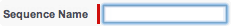
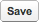
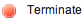
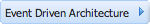
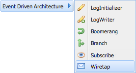
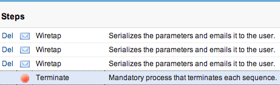
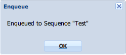
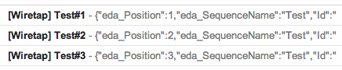

- Click the application icon on the top right of the screen.
-
- Create a new sequence by clicking the tab
then click the and insert
Testin the sequence name text box.

-
- Clicking  will surface a drag and drop canvas upon which
Sequence steps can be added and deleted.
( Note that the special [  ] process is automatically added as a sequence step.) -
-
Repeat the following three times :
- Click on the
 button to add a new
button to add a new Sequence Step.
- Select the  category which will reveal a list of available
processes to select from.

- Select a [ ] process.
- Click on the
-
- Using drag and drop, reorder the three [
] processes added in the step above so that the [
] process occupies the last position the
Sequence.
YourTestsequence should now approximate the following:

-
-
Testing :
You are now ready to execute the steps in theTestsequence by clicking the button. -
- A pop-up appears indicating that processing has started.

- Your email client will receive one email from each of the three [
] processes.

Each [ ] email represents the message entering and exiting a [ ] sequence step.